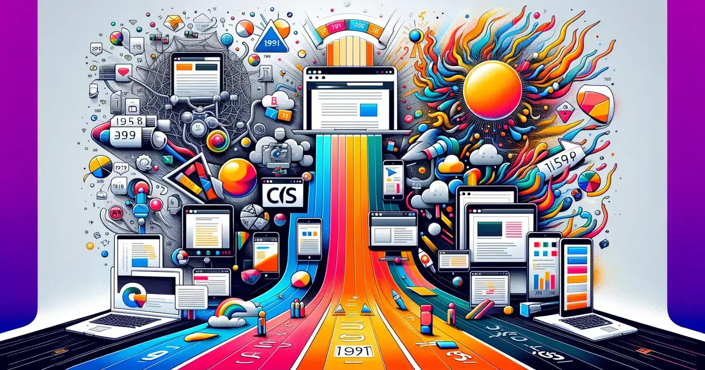

The Intertwined History of Website Design and Software Development

The history of website design and software development is a fascinating journey of innovation, creativity, and constant evolution. These two fields, while distinct, are deeply intertwined, each influencing and shaping the other as technology has advanced.
The Early Days: Text-Based and Functional (Late 1980s - Early 1990s)
The birth of the World Wide Web in 1989 by Tim Berners-Lee at CERN marked the beginning of website design. The first website, also created by Berners-Lee, was purely functional, consisting of simple text and hyperlinks on a white background. As stated by Clique Studios, "The first time a website was created, design wasn't a huge factor. It was only created for researchers, so the design used a sans-serif font, plain white background, and blue links to highlight text that was clickable." [1]
Software development during this period was focused on creating the underlying technologies that made the web possible. This included the development of the Hypertext Markup Language (HTML) by Berners-Lee in 1991, which provided the basic structure for web pages. According to the Web Design Museum, Berners-Lee's initial HTML document contained just 18 tags. [9]
The first web browser, WorldWideWeb, was also developed by Berners-Lee in 1990. [9] These early browsers were text-based, reflecting the limited capabilities of both software and hardware at the time.
The Rise of Visuals and Interactivity (Mid-1990s - Early 2000s)
The mid-1990s saw a shift towards more visually appealing websites. The introduction of graphical browsers like Mosaic in 1993, which allowed for the display of images inline with text, revolutionized web design. [5]
The development of Cascading Style Sheets (CSS) in 1996 was another significant milestone, giving designers greater control over the layout and presentation of web pages. As New Perspective Studio notes, "The 2000s introduced CSS, giving designers more creative freedom." [2] JavaScript, introduced in 1995, added interactivity to websites, enabling dynamic content and user engagement. [5]
During this period, software development focused on creating more sophisticated tools and technologies to support the growing demands of web design. This included the development of more advanced programming languages, content management systems (CMS) like WordPress, and server-side technologies.
The Mobile Revolution and User Experience (Late 2000s - Present)
The advent of smartphones and tablets in the late 2000s brought about a new era in web design. Responsive design, introduced by Ethan Marcotte in 2010, became crucial, ensuring that websites could adapt to different screen sizes and devices. [5]
User experience (UX) became a central focus in web design, with designers prioritizing usability, accessibility, and user satisfaction. As New Perspective Studio points out, "User experience (UX) became a focal point in the late 2010s and continues to be a priority today." [2]
Software development has continued to evolve, with the rise of mobile app development, cloud computing, and more sophisticated front-end frameworks and libraries. These advancements have enabled web designers to create increasingly complex and interactive websites.
Key Milestones in Software Development:
- 1935: Alan Turing proposes the first theory about software. [2]
- 1948: Tom Kilburn writes the world's first piece of software. [6]
- 1957: Fortran, one of the first high-level programming languages, is developed. [4]
- 1958: John Tukey coins the term "software." [6]
- 1960s: The term "software engineering" emerges. [5]
- 1970s: The first personal computers are released. [5]
- 1990: Tim Berners-Lee creates the first web browser, WorldWideWeb. [5]
- 1995: JavaScript is introduced, adding interactivity to web pages. [5]
- 2000s: The Agile Manifesto is published, revolutionizing software development methodologies. [5]
- 2010s: Cloud computing becomes increasingly popular. [5]
Conclusion:
The history of website design and software development is a testament to human ingenuity and the relentless pursuit of innovation. From the simple text-based websites of the early internet to the dynamic and interactive experiences of today, both fields have come a long way. As technology continues to advance, we can expect even more exciting developments in the years to come, further blurring the lines between design and development and creating new possibilities for the web.
References:
- Clique Studios - A Brief History of Web Design
- New Perspective Studio - A Brief History of Web Design
- Computer History Museum - The Development of FORTRAN
- Interaction Design Foundation - The History of UX Design
- IEEE Computer Society - Who Coined the Term 'Software'?
- Web Design Museum - The First Website